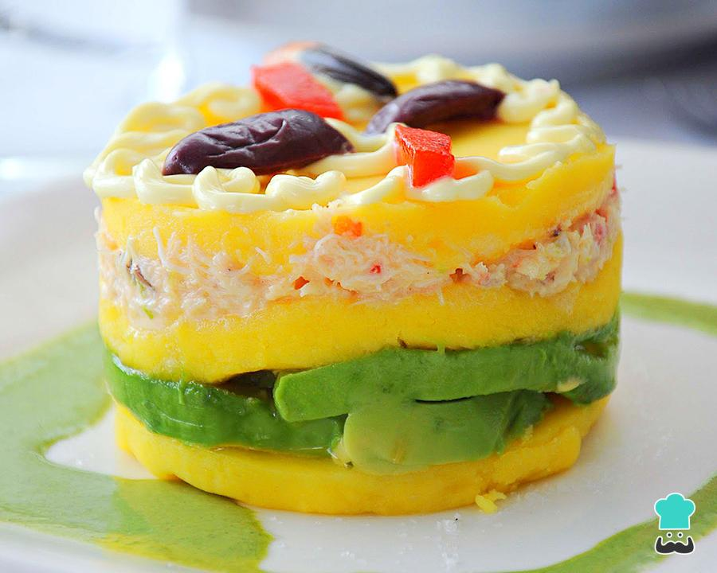

Recetas típicas y populares de la gastronomía peruana.
Causa Rellena
Este plato es tradicionalmente elaborado sobre la base de papa amarilla, limón, ají amarillo, huevo cocido y aceitunas negras, ingredientes a los que luego se les añadió palta para el relleno y la lechuga para la decoración. Esta preparación admite diversas variantes, como causa rellena de atún, de trucha, de pollo, de mariscos u otras variedades de carnes blancas. Se sirve con un ligero baño de mayonesa. Además de papa amarilla, la masa de la causa puede ser elaborada con pallares verdes o yuca amarilla. ¿Te gustaría prepararla? ¡Manos a la obra!
Ver Receta
Ceviche de Pescado
El cebiche peruano es sinónimo de orgullo y admiración para cada uno de los habitantes de este país sudamericano. La gastronomía peruana, que pone a disposición este exquisito plato marino, es uno de los principales motivos para que cada vez más turistas de todo el mundo visiten el país inca y puedan deleitar sus paladares. ¡Y aquí tienes la receta!
Ver Receta
Lomo Saltado
El lomo saltado es un plato típico de la gastronomía del Perú consistente en carne de res, arroz cocido y papas fritas. Es uno de los platos más consumidos popularmente en el Perú.
Ver Receta
Ají de Gallina
El ají de gallina es un plato típico de la gastronomía peruana, concretamente de la costa, que consiste en un ají o crema espesa con pechuga de gallina deshilachada. Esta crema es servida con papas cocidas, y en ocasiones con arroz blanco. Es común reemplazar la gallina por pollo.
Ver Receta